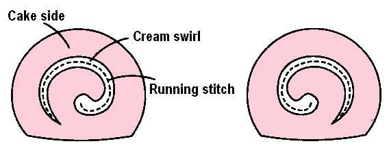

Step 3
With the white thread, sew the two cream spirals to the cake fronts with a running stitch as shown.
Make sure the swirls are mirrored!
Also helpful:
- Threading a needle
- Tying a knot
- Running stitch
- Tying off hand sewing
- Thimbles



With the white thread, sew the two cream spirals to the cake fronts with a running stitch as shown.
Make sure the swirls are mirrored!
Also helpful: